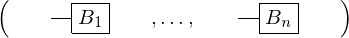
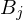

Expression of type Circuit¶
from the theory of proveit.physics.quantum¶
In [1]:
import proveit
# Automation is not needed when building an expression:
proveit.defaults.automation = False # This will speed things up.
proveit.defaults.inline_pngs = False # Makes files smaller.
%load_expr # Load the stored expression as 'stored_expr'
# import Expression classes needed to build the expression
from proveit import B, ExprArray, ExprRange, IndexedVar, j, n
from proveit.numbers import one
from proveit.physics.quantum import Gate
from proveit.physics.quantum.circuit import Circuit
In [2]:
# build up the expression from sub-expressions
expr = Circuit(ExprArray([ExprRange(j, Gate(IndexedVar(B, j)), one, n)]))
Out[2]:
expr: 
In [3]:
# check that the built expression is the same as the stored expression
assert expr == stored_expr
assert expr._style_id == stored_expr._style_id
print("Passed sanity check: expr matches stored_expr")
In [4]:
# Show the LaTeX representation of the expression for convenience if you need it.
print(expr.latex())
In [5]:
expr.style_options()
Out[5]:
In [6]:
# display the expression information
expr.expr_info()
Out[6]:
| core type | sub-expressions | expression | |
|---|---|---|---|
| 0 | Operation | operator: 1 operand: 3 | |
| 1 | Literal |  | |
| 2 | ExprTuple | 3 |  |
| 3 | ExprTuple | 4 |  |
| 4 | ExprTuple | 5 |  |
| 5 | ExprRange | lambda_map: 6 start_index: 7 end_index: 8 | |
| 6 | Lambda | parameter: 15 body: 9 | |
| 7 | Literal |  | |
| 8 | Variable |  | |
| 9 | Operation | operator: 10 operand: 12 |  |
| 10 | Literal |  | |
| 11 | ExprTuple | 12 |  |
| 12 | IndexedVar | variable: 13 index: 15 |  |
| 13 | Variable |  | |
| 14 | ExprTuple | 15 |  |
| 15 | Variable |  |